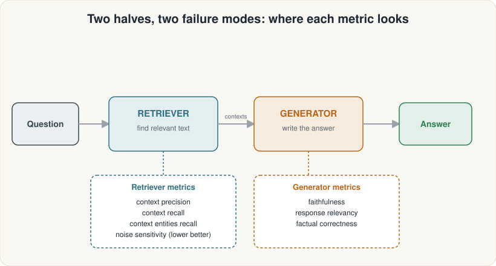

Understand why large language models need retrieval — and build an intuition for the retrieve → augment → generate loop.
Answer = Retrieved facts + Language model
ConceptualNo API keys neededModule 01 of 12
Built by mui-group @ ASDRP· Advanced Student Directed Research Program
What we'll cover
Contents
1
The problem
What LLMs know (and don't)
Confabulation / hallucination
Knowledge cutoff
No private data
2
The RAG idea
Retrieval-Augmented Generation
In-context learning
The 5-step flow
Two moving parts: retriever + generator
3
Putting it together
When RAG helps (and when it doesn't)
What comes next in this track
Notebook walkthrough
The problem · 1 of 3
An LLM is a frozen library
Training cutoff The model learned from text collected up to a fixed date. Anything after that date is unknown.
No private data Your company's internal documents, your research notes, your custom corpus — the model has never seen them.
Stale facts freeze Gold prices, breaking research, live events — static weights can't update without retraining.
The problem · 2 of 3
Confabulation: the model makes things up
When an LLM doesn't know the answer, it often invents one anyway — fluently and confidently. This is called confabulation (also called hallucination).
Example prompt: "What was the gold spot price on May 3rd?"
LLM without retrieval: "The gold spot price on May 3rd was $1,842.50 per troy ounce."Sounds precise — but it's fabricated. The model has no live price data.
⚠ KEY INSIGHT
An LLM doesn't know what it doesn't know. It will confidently fill in missing facts with plausible-sounding guesses. Fluency is NOT accuracy.
Why this matters for research: You cannot cite an LLM's claim without verifying it against a real source. RAG forces every answer to be grounded in actual retrieved text you can inspect.
The problem · 3 of 3
Three gaps a frozen model cannot close
Gap
What it means
Example
Temporal
Events after the training cutoff
Today's precious-metal spot prices
Private
Data the model was never trained on
Your lab's internal research notes
Precision
Specific facts that require exact sourcing
The exact troy-ounce definition in a contract
The solution: don't ask the model to remember — ask it to read. Inject the relevant text at inference time. That is retrieval-augmented generation.
The RAG idea · 1 of 3
The RAG loop in 5 steps
Key insight: the model never remembers facts — it reads them from passages placed directly in its prompt window.
In-context learning: LLMs can follow instructions and use new information supplied inside the prompt — no retraining required.
The RAG idea · 2 of 3
In-context learning: reading before answering
A key property of large language models is that they can use information placed directly in the prompt — without any fine-tuning or retraining. This is called in-context learning.
RAG exploits this by inserting retrieved passages as context. The model reads those passages and grounds its answer in them — just like you would look something up in a textbook before writing a report.
⚠ IMPORTANT LIMIT
The model can only use what fits inside its context window (a fixed token limit). Long documents must be split into chunks — that's Module 4. For now, think of it as a page of reading the model gets before it answers.
The RAG idea · 3 of 3
Two moving parts: Retriever & Generator

Each half can fail independently. Modules 7–9 will measure both halves with separate metrics.
Putting it together · 1 of 2
When RAG helps — and when it doesn't
RAG works well when…
Facts live in a specific document corpus
Information changes over time (prices, news)
You need to cite your sources
Private data must stay private (on-prem)
RAG is overkill / won't help when…
The task is pure reasoning (math, logic puzzles)
General world-knowledge questions the model already knows
Corpus is too noisy — bad retrieval degrades answers
⚠ GARBAGE IN, GARBAGE OUT
RAG is only as good as its retriever. If the retriever fetches irrelevant passages, the generator will produce a well-written but wrong answer. Retrieval quality is the #1 lever.
The capstone question we'll answer by Module 12: Does adding a reranker improve our precious-metals RAG system — and by how much, across which metrics?
Putting it together · 2 of 2
Your 12-module roadmap
Module
Topic
New capability
01
What is RAG? ← you are here
Concepts + intuition
02
Embeddings & meaning
Turn text into vectors
03
Similarity & vector search
Find nearest neighbors in Qdrant
04
Chunking & the corpus
Split 8-file metals knowledge base
05
First real RAG
Cloud LLM + prompt-stuffing answers
06
Why evaluate?
RAGAS setup + evaluation mindset
07–08
Retriever metrics
Precision, recall, entity recall, noise
09
Generator metrics
Faithfulness, relevancy, factual correctness
10
Reranking
Cohere rerank-v3.5
11
RAG → Agent
LangGraph ReAct agent + agent metrics
12
Capstone
Full pipeline assembly + MDD comparison
Summary
What you learned in Module 01
1
The problem
LLMs have a frozen knowledge cutoff
They confabulate when they don't know
Private data and live facts are inaccessible
2
The RAG idea
Retrieve → Select → Augment → Generate
In-context learning: read before answering
Two halves: retriever and generator
3
What's next
RAG needs good retrieval to work
Module 02 builds the retrieval foundation: embeddings
Run the notebook: open 01_what_is_rag.ipynb in Jupyter Lab and step through the cells to reinforce these ideas with interactive examples.